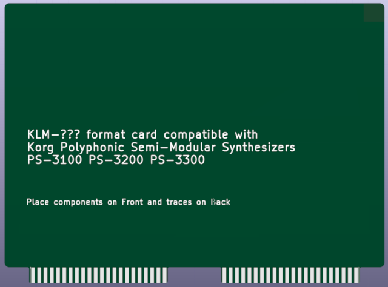

Korg Polyphonic Synthesizers (PS-3100, PS-3200, PS-3300) are complex and expensive synthesizers, but as these instruments are now at least 45 years old, occasionally their original parts fail, and there is a need for recreated parts, in order to keep the instrument in operating condition. This project is to create spare circuit boards to keep these old synthesizers operating.

(c) 2024 David Kaiser